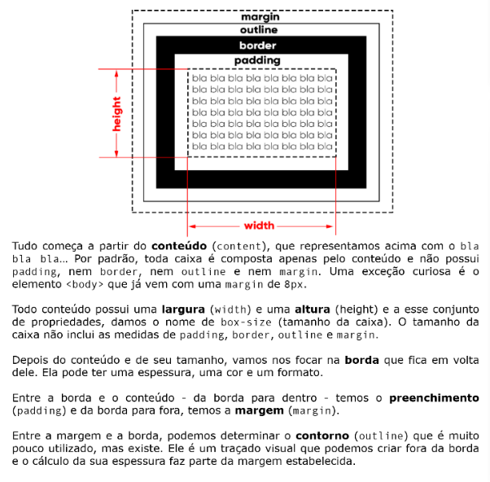

Representando cores por Exadecimais:
Cores exadecimais são representadas por 6 digitos, sendo 2 para vermelho, verde e azul, respectivamente;
Os valores vão de 0 a 9 e A a F, onde 0 é o menor e F é o maior, sendo assim uma cor 0000ff tem 0,0 vermelho, 0,0 verde e 255 azul;
Os valores de cada digito são de 0 a 15 seguindo a ordem de 0 a F, o primeiro digito de cada pár é multiplicado por 16 e seu segundo valor é multiplicado por 1, então um vermelho ff terá 15 x 16 + 15 x 1, totalizando 255.
A história dos tipos (letras)
Tipografia é o estudo dos tipos (letra) e como colocá-las no papel (ou tela, hoje). Johannes Gutenberg criou a prensa de tipos móveis por volta de 1450. No entanto, ele desenvolveu o invento entre 1439 e 1440.
Gutenberg baseou-se em prensas de vinhos;
Usou uma prensa de madeira, semelhante à prensa de parafuso agrícola da época;
Utilizou tinta à base de óleo de linhaça;
Criou um processo de produção em massa de tipos móveis;
Inventou um portador dos moldes que permitiu a fabricação rápida dos tipos de impressão.
Anatômia dos tipos
A letra “x” minúscula é a primeira letra a ser feita em uma fonte, e todas as outras letras minúsculas são feitas com base nessa altura. Isso é chamado de Altura X.
Acima da letra “x” é chamada “altura ascendente” assim como para baixo é “descendente”, para letras maiúsculas é chamado “Altura das Maiúsculas”
Um glifo, é uma letra “A”, por exemplo, um conjunto de glifos formam uma fonte “A, B, C, a, b, c). Algumas fontes possuem famílias, como light, normal, seminegrito, negrito e extranegrito, mas nem todas possuem isto.
Categorias de fontes
Toda fonte faz parte de uma ou mais categorias
Serifadas (Possuem Serifas)
Sans-Serif (Não são Serifadas)
Monoespaçadas (Todos os glifos possuem a mesma largura)
Handwriting (Simula uma escrita à mão)
Display ou Comemorativas (Não se baseia em nenhuma das outras)
Tamanhos de fontes
Aqui estão exemplos de cada medida usando o numero "1" como comparação das seguintes medidas: px, pt, mm, vh, ex, vw, pc, em, rem, cm, in.
1px
1pt
1mm
1vh
1ex
1vw
1pc
1em
1rem
1cm
1in
mm, cm, e in são unidades já conhecidas (milimetros, centimetros e polegadas);
px é pixel, uma fonte naturalmente tem 16px;
pt é ponto aproximadamente 1,33px;
pc é paica é exatamente 16px;
em é uma medida relativa ao tamanho atual da fonte, uma fonte de 16px com 2em terá 32px;
ex é a baseada na altura do "x", em fontes padrões com 16px 1ex tem 8px;
rem é baseada no tamanho da fonte definida no HTML, por padrão é 16px;
vw é beaseada na largura da tela, 1vw é 1% da largura mostrada;
vh é o mesmo que vw mas sobre a largura.
Fontes Externas
Você deve baixar a fonte que você deseja usar, essa fonte pode vir de vários formatos mostrados abaixo, é necessário criar uma pasta fonts em sua parta de arquivos da página e usar a regra @font-face { font-family: src: url(); na url você deve colocar o nome do arquivo EXATAMENTE como está escrito entre “” após isso você deve tirar o “;” e colocar a tag format() e adicionar o tipo de formato da sua fonte, depois colocar o “;” ao final do format. Por fim você adiciona um nome para sua fonte em “font-family:”.
Tipos de format()
- opentype (otf)
- truetype (ttf)
- embedded-opentype (eot)
- truetype-aat (Apple advanced typography)
- svg
Text-indent, dentro de style, pode ser usado para criar um espaço no começo de uma escrita.
Pseudoclasses
Pseudoclasses são palavras chaves que são determinar por um “:”, como por exemplo “:hover” indica que ao passar o mouse por cima desta característica dentro do site acionará outra coisa, como por exemplo fazer outro texto aparecer.
visited pode modificar a cor de um link ao já ter visitado ele. link
active muda algo ao clicar clica
Caixas
Caixas são divididas em box-level e inline-level.
Anatomia

Sempre comece a formatar os componentes border, margim, padding e outline de cima para a direita, baixo e por fim esquerda.
Borda
Margem
Padding